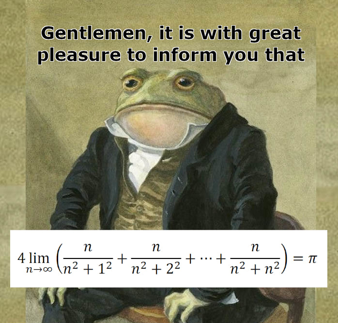

Very interesting title
A main introduction under a very interesting title!
Also interesting sub-title
Here a detail applying to the very interesting sub-title in connection to what I’ve outlined in the title!
I have some questions:
- Why the frog is so elegant?
Because he’s a gentelman
- Is he right?
I’ve not checked, but based on his appereance I’d say he’s not lying
random text in a file format
some data would go here
ENTER
we don’t even really know
Note
A note about the topic
Warning
Understand this to proceed!
Danger
If you don’t understand THIS part, you wo’t understand the next one.